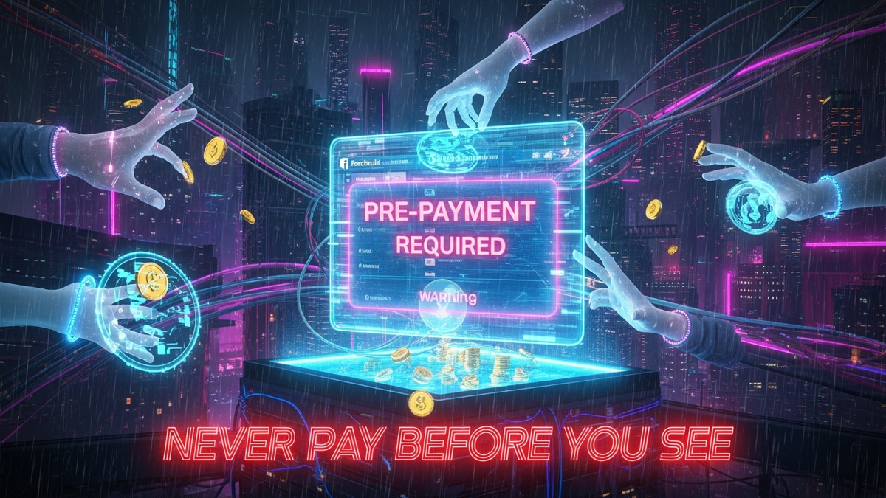

In the bustling digital bazaar that is Facebook Marketplace, the promise of a great deal often beckons. From antique furniture to the latest gadgets, the platform connects millions of buyers and sellers daily, fostering a thriving local economy. Yet, amidst the genuine opportunities, a pervasive and insidious threat lurks: the pre-payment trap. This article serves as a crucial warning, a comprehensive guide designed to equip you with the knowledge and vigilance needed to navigate Facebook Marketplace safely. We delve deep into the mechanics of this scam, dissecting why the seemingly innocent request for an upfront payment is, in almost every instance, a harbinger of fraud. Our mission is to empower you with critical rules and best practices, ensuring your online transactions remain secure, your hard-earned money protected, and your trust in community commerce preserved. The cardinal rule, reiterated throughout this extensive guide, is simple yet profoundly effective: Never Pay Before You See. This isn't just a recommendation; it's the bedrock of safe online buying, a shield against the deceptive tactics of scammers who seek to exploit your eagerness for a bargain.
The pre-payment scam on Facebook Marketplace is a sophisticated yet alarmingly common tactic employed by fraudsters to defraud unsuspecting buyers. It capitalizes on human psychology, exploiting eagerness, trust, and the desire for a good deal. Understanding the step-by-step process of how these scams unfold is the first critical step in protecting yourself. Typically, the scam begins with an enticing listing – an item priced significantly below its market value, or a highly sought-after product that appears to be available immediately. The listing itself might be legitimate in appearance, often featuring high-quality photos (sometimes stolen from other listings or the internet) and a seemingly reasonable description. The scammer's primary goal is to establish contact and move the conversation off the public platform as quickly as possible, often suggesting messaging via text or another app to avoid Facebook's moderation tools.
Once contact is made, the scammer initiates a carefully crafted dialogue designed to build a false sense of urgency and trust. They might claim to have multiple interested buyers, emphasizing that the item will be sold to the first person who commits with a deposit. This pressure tactic aims to bypass any rational thought processes the buyer might employ, pushing them towards a hasty decision. The scammer might also invent a compelling backstory: they're moving out of state tomorrow, they need the money for an emergency, or they're selling on behalf of an elderly relative. These narratives are designed to elicit sympathy and make the request for pre-payment seem reasonable, even necessary. They might even offer to "hold" the item for a small deposit, making it seem like a fair compromise, when in reality, it's just a smaller initial step in their larger scheme.
The payment methods requested are a huge red flag. Scammers almost universally avoid traceable and reversible payment systems. They will demand payment via methods like Zelle, Cash App, Venmo, Apple Pay, Google Pay, gift cards (especially Steam, Amazon, or prepaid Visa cards), or direct bank transfers. These methods are preferred because they are designed for immediate, irreversible transfers between trusted parties. Once money is sent through these channels, it is exceedingly difficult, if not impossible, to recover. They will never suggest meeting in person for cash, or using Facebook's official payment processing if it offers buyer protection for certain categories, because these options introduce a level of accountability and traceability that undermines their fraudulent intent. The moment a buyer sends money, the scammer typically vanishes. Their profile might be deleted, their messages cease, and the promised item never materializes. The buyer is left with no item, no money, and often no recourse, as these transactions fall outside the protective umbrella of most financial institutions or Facebook's own limited buyer protection policies for off-platform deals. The entire interaction is a carefully orchestrated play, from the initial bait to the final disappearance, all designed to separate you from your money with maximum efficiency and minimal risk to the perpetrator.
Furthermore, some sophisticated scammers might even go a step further, attempting to phish for personal information under the guise of "verifying" the transaction or sending a "refund." They might send fake links or request banking details, setting the stage for identity theft or further financial fraud. This multi-layered approach highlights the need for extreme caution and a deep understanding of the tactics at play. The scammer’s narrative is always consistent: they are legitimate, the deal is real, and the pre-payment is the only way to secure it. They are masters of creating a convincing façade, often using polite and reassuring language, until the money is transferred. Recognizing these patterns and refusing to deviate from the fundamental rule of "Never Pay Before You See" is your strongest defense against falling victim to this pervasive online menace.
The request for pre-payment on Facebook Marketplace is not just a warning sign; it is a blaring siren indicating potential fraud. Understanding *why* this seemingly innocuous request poses such a significant risk is crucial for anyone engaging in online transactions. At its core, the danger lies in the complete shift of risk from the seller to the buyer, coupled with an almost total loss of recourse once funds are transferred. When a seller insists on payment before you have physically inspected the item, verified its condition, and taken possession, they are essentially asking you to gamble your money on their honesty, with no safety net whatsoever. This is fundamentally contrary to safe transaction practices, where payment and item exchange should be simultaneous or, at the very least, occur after satisfactory inspection.
One of the primary reasons pre-payment is a red flag is the nature of the payment methods often requested by scammers. As previously mentioned, fraudsters almost exclusively demand payment via non-reversible services like Zelle, Cash App, Venmo, Apple Pay, Google Pay, or gift cards. These platforms are designed for instant, person-to-person transfers, akin to handing over physical cash. They lack the robust fraud protection mechanisms offered by credit cards or services like PayPal Goods & Services, which are designed to protect buyers from fraudulent transactions. With Zelle, for instance, once you authorize a transfer, the money is typically gone within seconds and cannot be recalled by your bank, even if you quickly realize you've been scammed. The same applies to Cash App and Venmo; while they may offer some limited dispute resolution, their terms of service often place the burden of verification on the user, and unauthorized transfers are much easier to dispute than those you willingly initiate, even if under false pretenses. Gift cards are perhaps the most insidious, as they are untraceable and non-refundable once the codes are redeemed, making them a favorite tool for scammers. By insisting on these methods, the scammer ensures that once you send the money, it becomes virtually impossible for you to retrieve it, leaving you entirely at their mercy.
Furthermore, Facebook Marketplace itself offers very limited buyer protection, especially for transactions conducted outside of its facilitated checkout process. Unlike platforms such as eBay or Amazon, which have comprehensive buyer protection policies covering items not received or not as described, Facebook Marketplace largely acts as a classifieds service. It connects buyers and sellers but does not typically mediate disputes or offer refunds for private sales, particularly when payment occurs off-platform. This lack of institutional recourse means that if a scammer vanishes after receiving your pre-payment, Facebook will likely be unable to assist in recovering your funds. Your only potential avenue for recourse might be reporting the fraud to law enforcement, but even then, tracking down and prosecuting online scammers, especially those operating internationally, is an incredibly difficult and often fruitless endeavor. The police typically prioritize higher-value or more organized crimes, and individual marketplace scams often fall into a category where resources are limited.
The psychological impact of pre-payment also contributes to its red-flag status. A legitimate seller understands and respects a buyer's need to inspect an item before committing. They would generally be amenable to meeting in person, accepting cash upon delivery, or using a secure, buyer-protected payment method. A seller who pressures you for pre-payment, invents elaborate excuses for why they can't meet in person, or dismisses your concerns about security, is almost certainly attempting to defraud you. Their insistence on pre-payment is a strong indicator that they have no intention of delivering the item and are solely focused on securing your funds before disappearing. Recognizing this fundamental shift in risk and the profound loss of recourse is paramount. It solidifies the understanding that any request for payment before a verified exchange is not just an inconvenience, but a critical vulnerability that scammers are eager to exploit.
Navigating Facebook Marketplace requires a keen eye for detail and an unwavering skepticism, as scammers continuously adapt their tactics. Recognizing real-world scenarios and specific warning signs can be the difference between a successful transaction and a costly mistake. The deception often begins subtly, escalating as the scammer gauges your willingness to compromise on safety. One common scenario involves the "too good to be true" deal. Imagine seeing a brand-new iPhone listed for half its retail price, or a high-end bicycle for a fraction of its market value. While genuine bargains do exist, extreme discounts are almost always a lure. The scammer knows that such irresistible prices will attract immediate attention, bypassing rational thought and creating a sense of urgency. When you inquire, they'll often respond quickly, sometimes with generic, pre-written messages, indicating a high volume of similar scams.
Another prevalent scenario involves the "unavailable to meet" seller. The scammer might claim to be out of town, working long hours, or even hospitalized, making it impossible for them to meet you in person to show the item. Instead, they’ll propose sending the item via a "trusted courier" or "delivery service" after you’ve made a pre-payment. They might even send you a tracking number that either doesn't exist or leads to a fake website designed to mimic legitimate shipping companies. This tactic effectively removes the possibility of inspection and physical exchange, which is the scammer's ultimate goal. They might also try to convince you that the item is located far away, requiring shipping, and therefore, pre-payment for "shipping costs" or "insurance." These are all elaborate ruses to justify their demand for upfront cash without any intention of sending an item.
Beyond these scenarios, several specific warning signs consistently appear in pre-payment scams. Firstly, examine the seller's profile. Is it brand new, with no friends, activity, or previous marketplace listings? While everyone starts somewhere, an empty or suspicious profile is a major red flag, especially if they are selling high-value items. Scammers often create new, disposable accounts to avoid being tracked. Secondly, observe their communication style. Do they refuse to answer direct questions about the item's condition or origin? Do they pressure you relentlessly for immediate payment, often using phrases like "act now or lose out" or "I have other buyers interested"? Legitimate sellers are usually patient and willing to provide details. Thirdly, be wary of any seller who insists on communicating exclusively through external messaging apps (WhatsApp, Telegram) rather than through Facebook Messenger. This move is often an attempt to escape Facebook's monitoring and moderation, making it harder to report their fraudulent activities.
Secure your digital wealth with the world's most trusted hardware wallets.
GET YOUR WALLET NOWFinally, the most critical warning sign is, of course, the demand for non-reversible payment methods. If a seller asks you to pay via Zelle, Cash App, Venmo, gift cards, cryptocurrency, or bank transfer for an item you haven't seen, walk away immediately. Legitimate sellers, especially for local pickups, prefer cash or potentially a secure, buyer-protected platform like PayPal Goods & Services (though even with PayPal, in-person cash is generally safer for local pickups). Any deviation from these safe practices, combined with any of the other red flags, should trigger an immediate cessation of communication. Trust your gut feeling; if something feels off, it almost certainly is. By familiarizing yourself with these common scenarios and recognizing these tell-tale warning signs, you significantly enhance your ability to identify and avoid the cunning traps laid by pre-payment scammers on Facebook Marketplace.
Equipping yourself with a robust defense arsenal is paramount for safe navigation of Facebook Marketplace. Beyond merely identifying scams, proactive adherence to critical rules and best practices will safeguard your finances and personal security. The cornerstone of this defense, reiterated for its absolute importance, is the unwavering commitment to the principle: Never Pay Before You See. This rule is non-negotiable for all local transactions. It means that no matter how enticing the deal, how urgent the seller's plea, or how inconvenient it might seem, you must physically inspect the item, verify its condition, and confirm its authenticity before any money changes hands. This simple act eliminates the vast majority of pre-payment scams, as it removes the scammer's ability to take your money without delivering a product.
When it comes to the physical exchange, prioritize safety above all else. Always insist on meeting the seller in a public, well-lit, and busy location. Ideal spots include police station parking lots (many now designate "safe exchange zones"), busy shopping centers, coffee shops, or even the parking lot of a local supermarket. Avoid isolated areas, private residences, or meeting late at night. Bringing a friend or family member with you adds an extra layer of security and serves as a witness to the transaction. If the item is too large to transport easily from a public meeting spot, such as furniture or a large appliance, exercise extreme caution. Consider asking a friend to accompany you, or if possible, arrange for payment upon delivery after thorough inspection, ideally with the seller present. If a seller is unwilling to meet in a public place, or insists on you coming to a secluded location, it is a significant red flag and reason enough to cancel the transaction.
Regarding payment methods, cash is king for local, in-person transactions. Cash is instant, untraceable (in the context of digital fraud), and requires no personal financial information exchange. When you pay with cash, the transaction is final and complete once the item is in your possession. If the item requires electronic payment, only use methods that offer robust buyer protection, such as PayPal Goods & Services, and always ensure you understand the terms and conditions of that protection. Critically, avoid payment methods like Zelle, Cash App, Venmo, gift cards, or bank transfers for marketplace purchases, as these offer virtually no recourse if the transaction goes awry. These services are designed for transfers between trusted individuals, not for commercial transactions with strangers. Be wary of any seller who tries to divert you to an external website for payment, claiming it's a "secure checkout" or "official payment portal" – these are almost always phishing attempts or direct scam sites.
Furthermore, conduct due diligence on the seller. Review their Facebook profile: look for a history of activity, friends, and other marketplace listings. While a new profile isn't always a scam, combined with other red flags, it's highly suspicious. Ask specific questions about the item's history, condition, and any potential flaws. A legitimate seller will be transparent and willing to provide details and additional photos. If their answers are vague, evasive, or if they rush you through the conversation, proceed with extreme caution. Before meeting, take screenshots of the listing, the seller's profile, and all communication. This documentation can be invaluable if a dispute arises or if you need to report fraudulent activity. By consistently applying these critical rules – never paying before seeing, prioritizing safe meeting locations, using secure payment methods, and performing seller due diligence – you transform yourself from a potential victim into a discerning, protected buyer, making you an undesirable target for scammers on Facebook Marketplace.
While vigilance and adherence to best practices are your primary defenses, several tools and solutions can further enhance the safety of your Facebook Marketplace transactions. Leveraging these resources can provide additional layers of security, helping you identify legitimate sellers and secure your purchases. The first and most accessible tool is Facebook's own platform features. Although its buyer protection for off-platform transactions is limited, Facebook does offer features designed to foster transparency and communication. Always use Facebook Messenger for all communication with sellers. This keeps a verifiable record of your conversations, which can be crucial evidence if a dispute arises or if you need to report a scam. Avoid moving conversations to WhatsApp, SMS, or email, as this removes the interaction from Facebook's oversight and makes it harder to track fraudulent activity. Facebook also allows you to view a seller's profile, including their activity, friends list (if public), and other Marketplace listings. While not foolproof, a sparse or newly created profile with no history is a significant red flag that this tool helps you identify.
Beyond communication, consider using public "Safe Exchange Zones" or "Meetup Spots" offered by local law enforcement agencies. Many police departments across the country have designated areas, often in their parking lots, that are under 24/7 surveillance and are explicitly intended for safe online transactions. These zones provide a secure, public environment for you to inspect items and conduct exchanges, significantly deterring potential criminals who rely on anonymity and isolated locations. A quick online search for "safe exchange zone [your city/county]" will typically yield information on local options. If a seller refuses to meet at such a location, it should immediately raise your suspicions and prompt you to reconsider the transaction. This tool isn't just about deterring scams; it's also about personal safety, ensuring you're not vulnerable to robbery or other physical threats during an exchange.
For electronic payments, if an in-person cash exchange isn't feasible and you absolutely must use a digital method, consider using services that offer buyer protection. PayPal Goods & Services is generally considered one of the safer options, as it provides a dispute resolution process and buyer protection against items not received or not as described. However, even with PayPal Goods & Services, it's crucial to understand its limitations, especially for local pickups where proof of delivery can be ambiguous. Always ensure you are using the "Goods & Services" option, not "Friends & Family," as the latter offers no protection. For higher-value items or those requiring shipping, some buyers opt for an escrow service. While not widely adopted for typical Facebook Marketplace transactions due to cost and complexity, legitimate escrow services hold funds from the buyer until the seller provides proof of delivery and the buyer confirms satisfaction. This removes the pre-payment risk entirely, but it's usually reserved for very high-value items where both parties agree to the additional steps and fees.
Finally, utilize reverse image search tools like Google Images or TinEye to verify product photos. Scammers frequently steal images from legitimate listings or manufacturer websites. If a seller's photos appear on multiple listings across different platforms or are clearly stock images, it's a strong indicator of a potential scam. Additionally, leverage community forums and online groups dedicated to reporting scams. Websites like the Better Business Bureau (BBB), Reddit communities focused on scams, or local Facebook groups often share information about current fraud trends and specific scammers. Staying informed through these channels can help you recognize new tactics and avoid falling victim. By proactively integrating these tools and solutions into your transaction process, you build a more robust defense against the sophisticated deception prevalent on Facebook Marketplace, moving beyond mere awareness to active protection.
Despite taking precautions, sometimes even the most vigilant individuals can fall victim to a sophisticated scam. If you find yourself in the unfortunate position of having been defrauded on Facebook Marketplace, immediate and decisive action is crucial. While full recovery of funds is often challenging, taking the right steps can increase your chances of recourse and, importantly, help prevent the scammer from preying on others. The very first step is to gather all available evidence. This includes screenshots of the original listing, all communication with the seller (Facebook Messenger, SMS, email, etc.), the seller's profile page, and any transaction details or receipts from your payment method (e.g., Zelle confirmation, Cash App history, gift card purchase receipts). Document the exact date and time of every interaction and transaction. This comprehensive collection of evidence will be vital for any subsequent reporting or recovery attempts.
Next, report the scam to Facebook Marketplace immediately. Go to the listing or the seller's profile and look for the "Report" option. Select the appropriate category, such as "Fraud," "Scam," or "Seller policy violation," and provide a detailed account of what happened, including all the evidence you've collected. While Facebook's direct intervention in recovering funds for off-platform transactions is limited, reporting helps them identify and remove fraudulent accounts, protecting other users. If the scammer's profile is still active, reporting it can lead to its suspension. Continue to monitor the platform for any reappearances of the... and implement these strategies to ensure long-term success.
In summary, staying ahead of these trends is the key to business longevity and security. By following this guide, you maximize your growth and ensure a stable digital future.
Don't wait for the headlines. Our Private Telegram Channel delivers real-time AI security updates and digital wealth strategies before they go viral. Stay protected. Stay ahead.
⚡ JOIN THE 1% NOWNo sign-up required. Instantly check risks, analyze AI text, or calculate your digital finances.